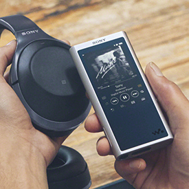

- 品牌故事 -
一杯音樂是一間複合式的耳機專門店，由於選購耳機要考量個人聽感、配戴舒適度等等甚為主觀的因素，我們認為必須透過顧客親自、長時間的配戴及試聽，才能找到「真正適合你的耳機」，因此我們將跳脫以往人們對3C產品專賣店擁擠、壓迫的刻板印象，並與咖啡館結合，創造一個輕鬆自在，同時兼具耳機專業的選購空間。
我們期望選購耳機是一趟自在的旅行，讓你逃離喧囂的城市步調，放輕腳步走進這裡，在毫無壓力的狀態下，仔細聆聽、品味，尋找屬於你的聲音。
一杯音樂不只是一間耳機專門店，更不僅僅是一間咖啡館，而是將陪你走過這趟旅程的旅行地圖。
專業諮詢
在您需要的時候
我們提供耳機專業諮詢
給予選購方向與建議
我們提供耳機專業諮詢
給予選購方向與建議
 試聽清潔
全店試聽機定時消毒清潔
試聽清潔
全店試聽機定時消毒清潔並於桌面提供酒精棉片
讓您安心試聽

高級音源
我們提供優質的撥放器
以及高清正版音源檔
讓耳機校能完美呈現
以及高清正版音源檔
讓耳機校能完美呈現
History
- 2017.02.14-台北西門館開幕
- 2018.04.25-取得Meze台灣代理權
- 2018.11.04-台中一中館開幕
- 2019.05.25-取得Aedle台灣代理權
- 2019.06.10-取得Atomic Floyd代理權
- 2019.10.23-高雄建國館開幕
- 代理耳機 -
Aëdle
Aedle耳機品牌來自法國，由兩位熱愛音樂的年輕人攜手打造，結合傳統精品與現代科技而設計製作耳機，他們希望打造出不僅具備良好音質表現、更同時擁有設計感的耳機，讓耳機不再只是單純聽音樂的工具，更是值得收藏的精品。
Atomic Floyd
來自英國的Atomic Floyd有耳機界的鋼鐵人之稱，強烈的金屬味是Atomic Floyd給人的第一印象。它在你想得到的地方都用了不銹鋼，包括耳機本體、iPhone控制器與麥克風，及3.5 mm插頭的基座，都可看到金屬原色光澤。
Meze
於2017年在英國創立的耳機品牌，創立者同時也是設計者Antonio Meze來自羅馬尼亞，Meze的產品線不廣，他們堅持使用和樂器相同材質的原木料製作耳機外殼，得以重現真實演奏感，並且非常注重耳機外型及配戴舒適度。